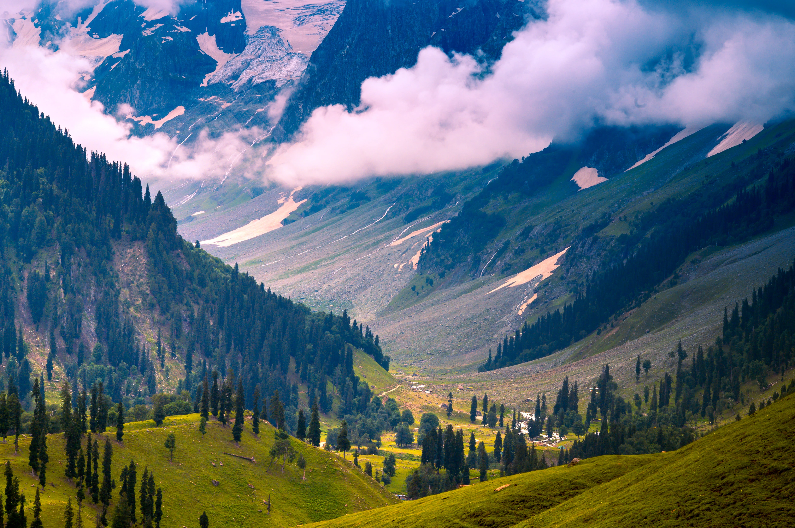

Best Places to Visit in Kashmir


Gulmarg
Gulmarg is the snow paradise of Kashmir. This skier’s paradise is popular for having one of world's highest and largest ropeways with an aerial distance of approx. 5kms. The view from top of the mountains at 3979 metres above sea level is bewildering. Snow falls are regular even during summer, giving every tourist a fair chance to enjoy the fall!
Pahalgam
Surrounded by Lidder Lake and Betaab Valley, Pahalgam is the place you visit to experience clear water rivers and exhilarating deep valleys. This place is famous for river rafting at Lidder Lake, golfing and shopping for traditional Kashmiri items.

Sonmarg
Sonmarg or the meadow of gold has one of the most picturesque views in Kashmir. Snow-clad mountains, green grasslands and ponies to ride on, this place is what they call, 'Jannat’ or heaven. Sonmarg is also one of the base points for starting the Amarnath Yatra. River rafting, zorbing, trekking are the various events conducted around the popular tourist spots. Sonmarg is inaccessible in winters due to heavy snowfall and avalanches.
Kashmir
5N/6D (1N Srinagar Houseboat1N Gulmarg2N Pahalgam1N Srinagar)
59999/-Only
Kashmir
6N/7D (1N Srinagar Houseboat1N Gulmarg2N Pahalgam2N Srinagar)
69999/-Only
Kashmir
6N/7D (1N Srinagar Houseboat1N Gulmarg2N Pahalgam2N Srinagar)
79999/-Only